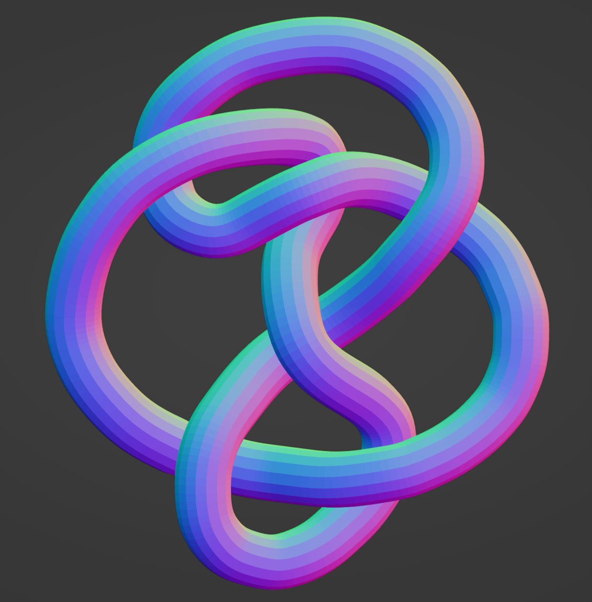
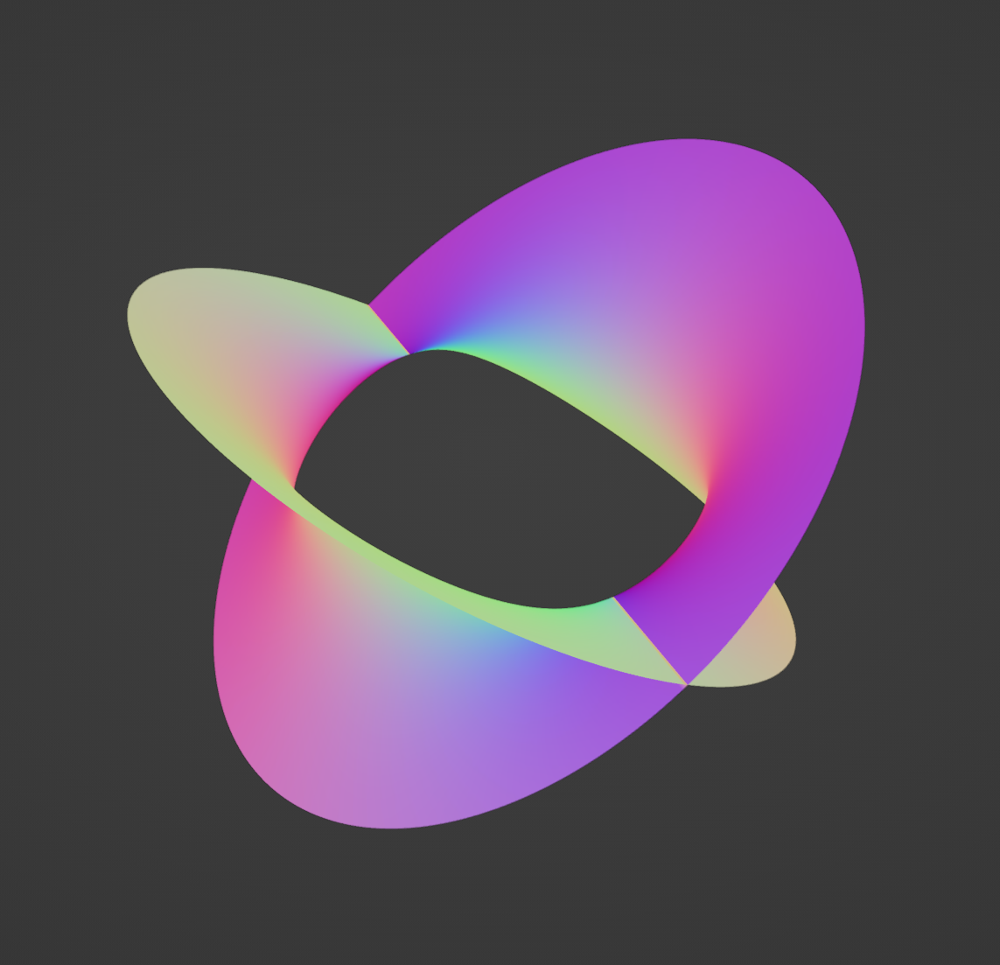
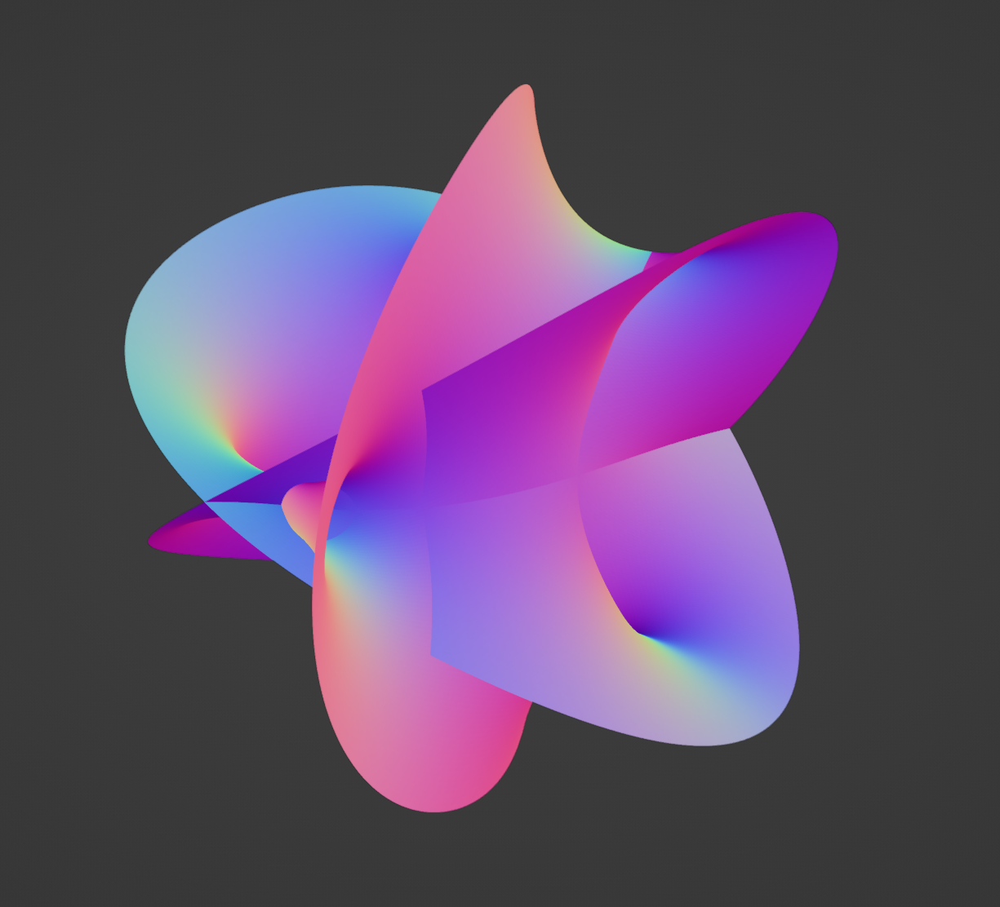
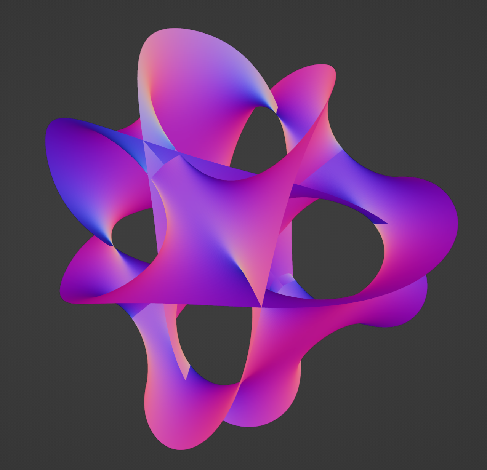
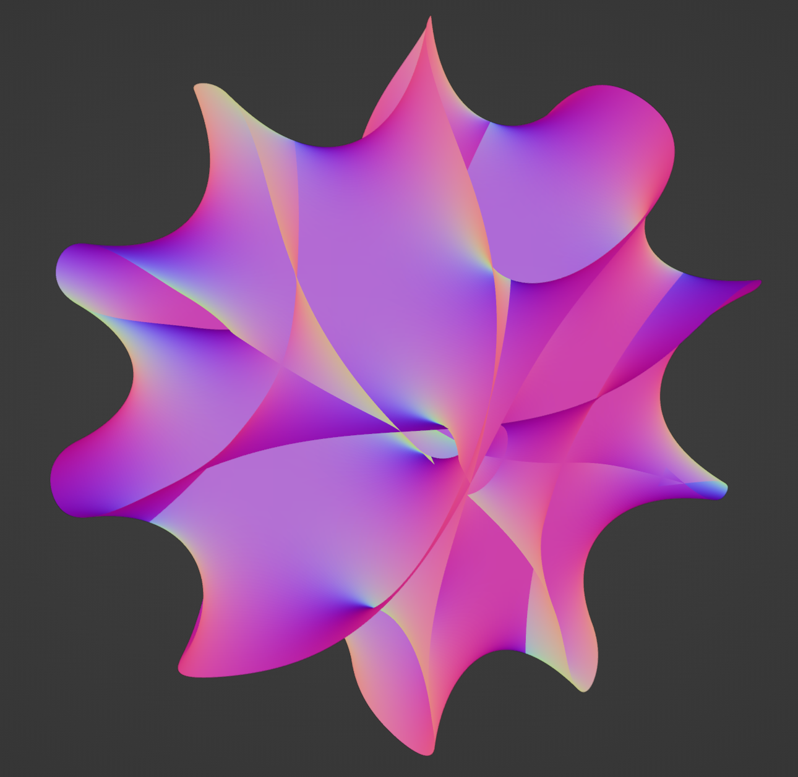

While you decide what do to with your life, here below is a small art gallery of sorts of some things I made. These are 3d models of Calabi-Yao Manifolds which have some cool properties in some funky theoretical physics but I just think they look neat, and their mathematical description is "kind of" simple, well, of the ones that are simple that is, hehe.
    